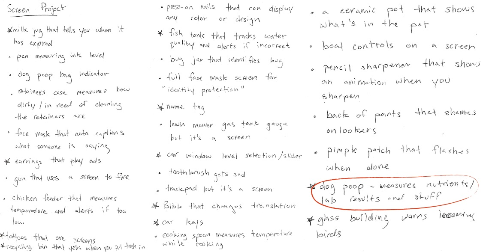
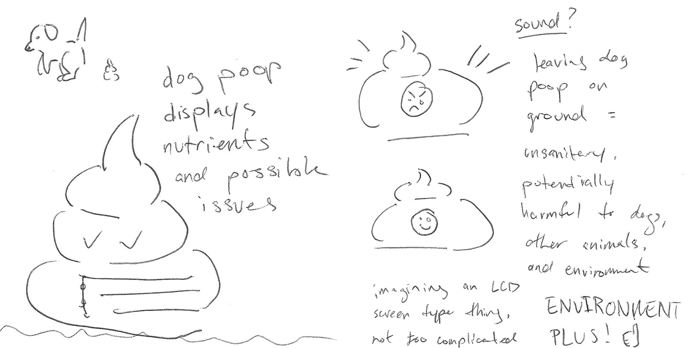
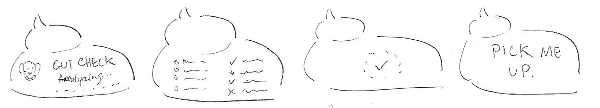
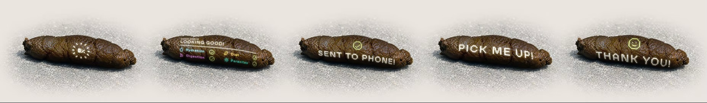

Interaction design · Speculative interface
PooPrint
What happens when a screen is applied to an unexpected physical object? Here, the dog waste becomes both the sample and the screen.

01
The prompt
This project explores what happens when a screen is applied to an unexpected physical object, not simply as an added interface, but as something that changes how we understand and interact with the object itself.
Object → screen → new interaction.
02
Initial ideation
Early exploration considered a wide range of unexpected applications before narrowing toward dog waste as the strongest opportunity for both information and interaction: health insights and behavioral feedback.

03
The motive
Dog waste can provide valuable insight into a dog’s health, but that information usually requires collecting a sample and sending it elsewhere for analysis. PooPrint imagines that feedback happening immediately, directly on the sample itself.
04
Research
Behavioral feedback
Immediate visual cues can encourage action without relying on lengthy instructions.
Canine health
Stool color, consistency, and appearance can provide clues about a dog’s digestive health and potential concerns.
Glanceable interfaces
Simple icons, colors, and status cues make information understandable quickly and at varying display sizes.
05
Sketches

06
Interaction flow

- 01
Analyze
After the dog defecates, the display begins and analyzes the sample.
- 02
Inform
Show key indicators: digestion, diet, parasites, hydration, irregularities.
- 03
Reward
Analysis complete; send results to phone for further information.
- 04
Prompt
Encourage cleanup via prompts depending on time and proximity.
07
Naming
Naming explored a range of playful, straightforward, and clinical directions, eventually leading to PooPrint as a balance of approachable branding and canine health.
- GutCheck
- OutPut
- DropLog
- PooPrint
- TellTail
- WasteWatch
08
Built to fit
Every sample creates a different display area. PooPrint adapts to the available surface space, adjusting information density while preserving visual hierarchy.

Small
Essential status.

Medium
Key indicators.

Large
Full health check.
09
The complete system

Analyze
Reading sample.
Check
Showing insights.
Share
Sending results.
Clean up
Prompting action.
Complete
Confirming cleanup.
10
Design takeaways
PooPrint turns an object normally ignored or avoided into a temporary interface. The screen makes hidden information visible while using feedback and humor to encourage responsible cleanup.
Inform
Makes hidden health information glanceable.
Respond
Adapts to physical states of sample.
Influence
Encourages good real-world actions.